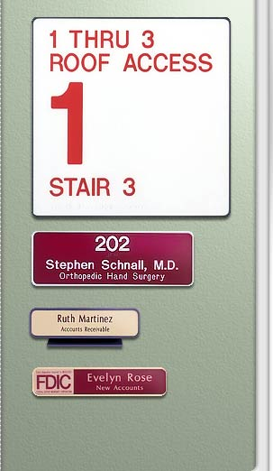

|
The
DESIGNER FRAME SYSTEM is designed for quality
interior signage. Several unique features offered
by this system will make designing and mounting
interior signage simple
- Ten sizes in six colors: Pewter,
White, Medium Grey, Almond, Brown, and Black.
- All sizes are multiples of
24" x 48" sheets, giving the maximum yield
out of sign materials.
- Completely supports 1/16"
material so that multiple plates can be used
as mini-directories or divided sign messages.
- Plates can be mounted with
adhesive-backed 3M DUAL LOCK™ or Sign
Snap so that they are tamper resistant but
still removable with a suction cup.
- Plates can be permanently mounted
to inside of frames with adhesives or two
sided transfer tape.
- Keyhole mounting for permanent
or removable frames.
- Pin system that mounts into
a frame for hanging frames from fabric office
partitions.
- Base that snaps into a 2"
x 8" and 2" x 10" frame for a handsome desk
sign.
- Double sided frames with corridor
bracket.
- Corridor bracket mounts with
two piece bracket for concealed screws.
|

|